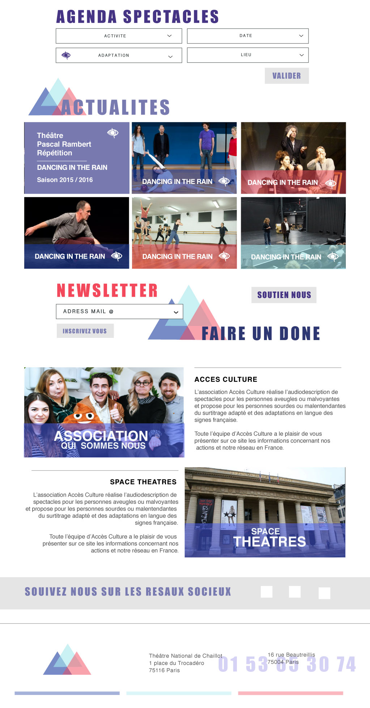

This is a school project. Accès Culture wanted to have a brand new website and logo, that would allow people with different capacities to access important cultural information without feeling or being treated like handicap. The design needed to be modern and simple, accesible whith out being to obvious. A website that would create new audience as well as new partners while keeping its theatrical and joyfull side. To inform and to relate to the users
ConceptionLogodesignWebdesignBranding
School project Website design
2016, Paris
School Project